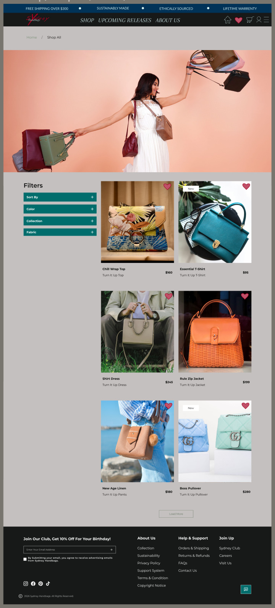
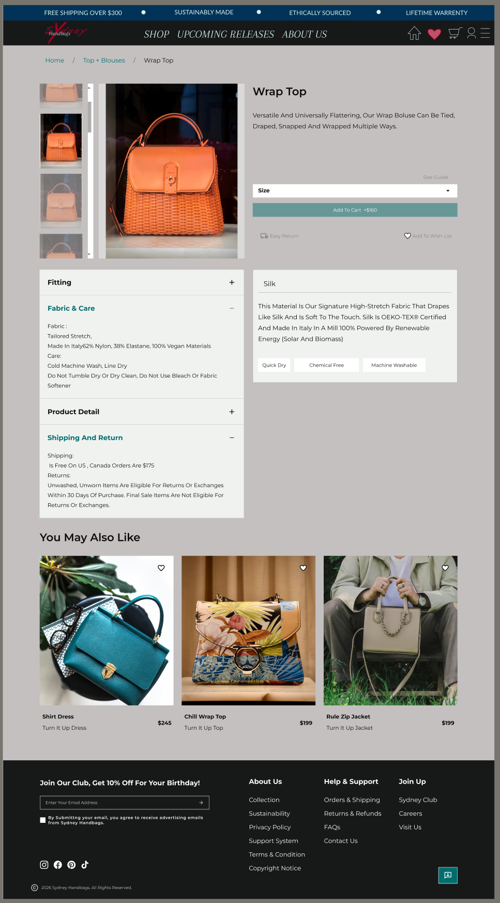
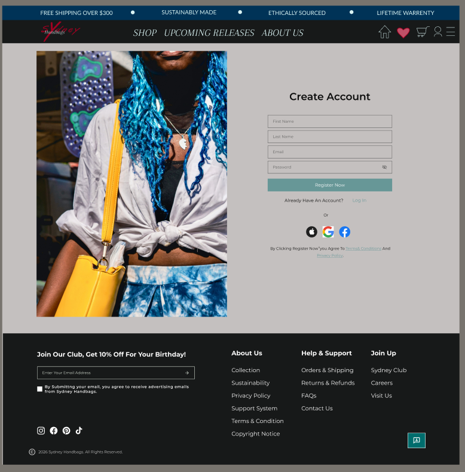
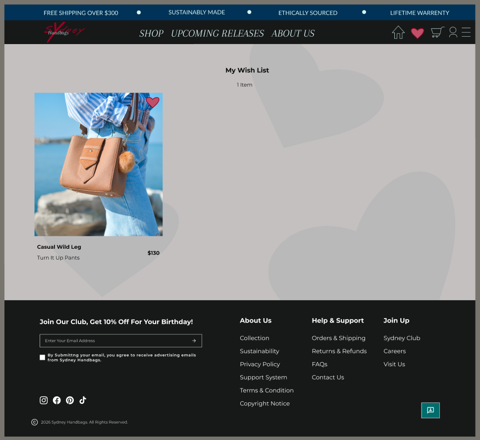
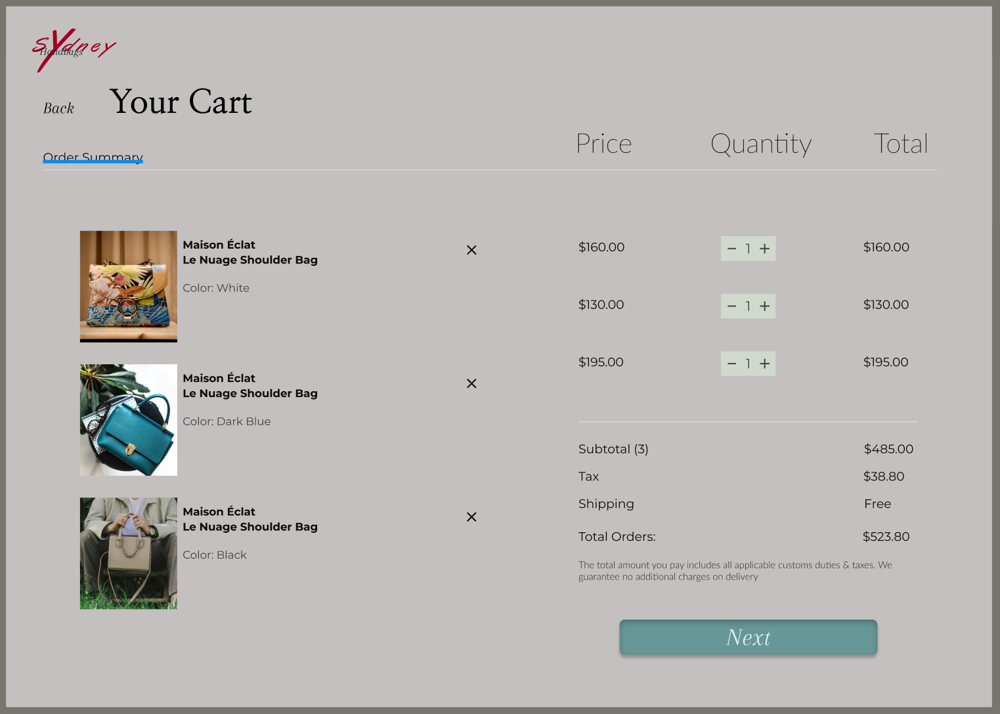
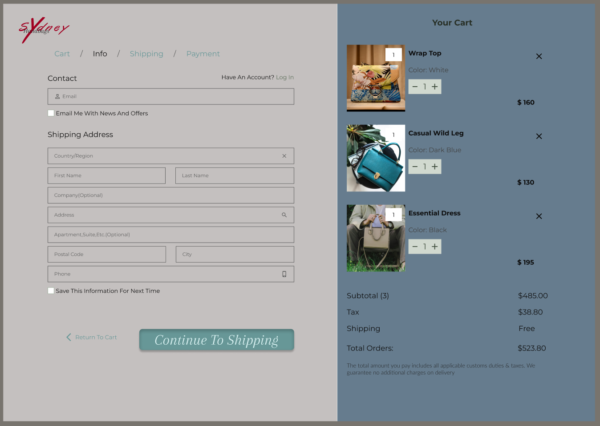
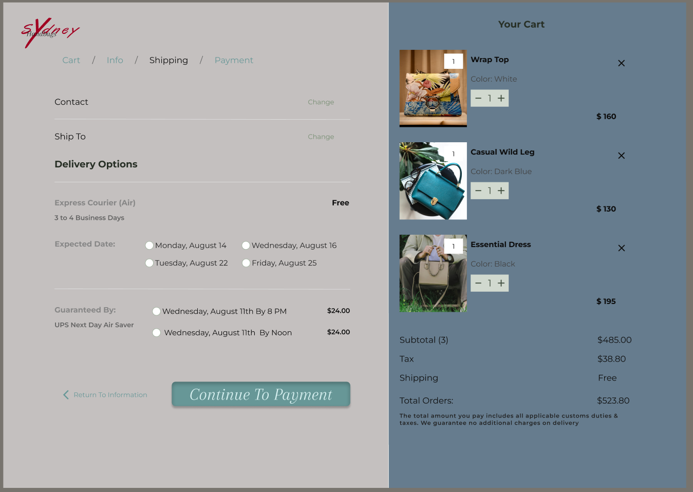
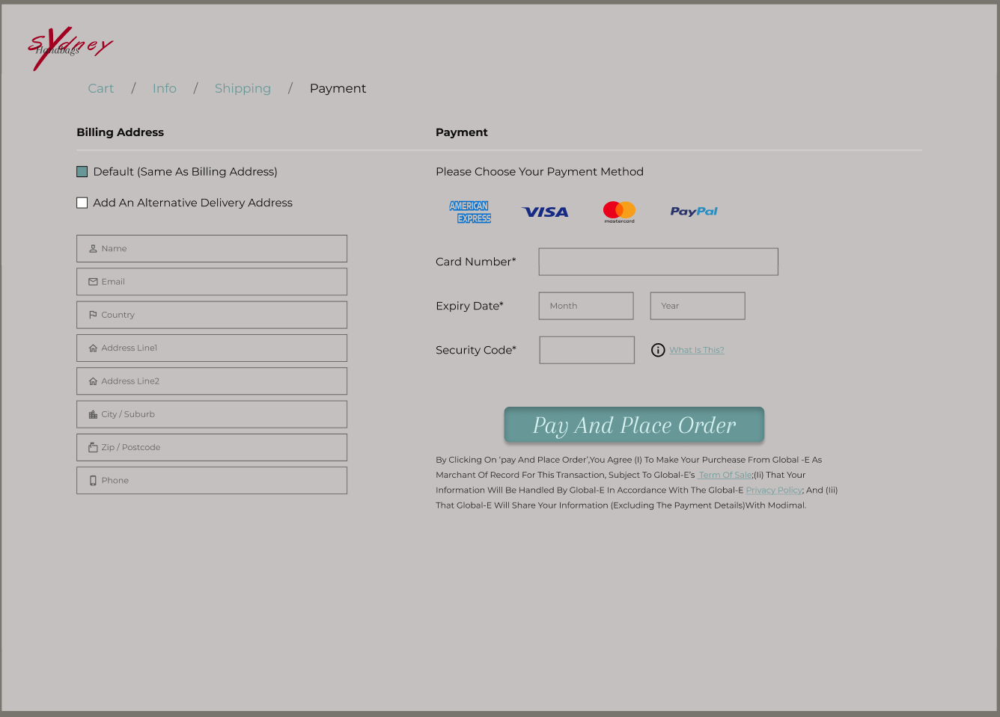
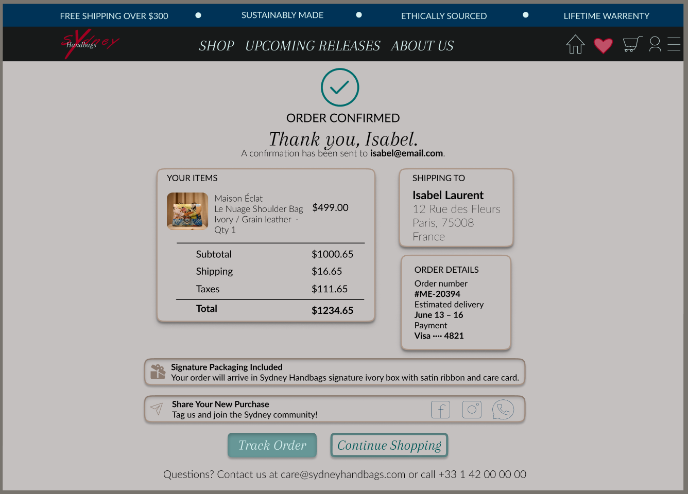

Figma Self-Taught Project
I taught myself Figma by designing a full multi-page app for a small business. A course gave me the basic outline and foundation. From there I branched out and added a lot more pages, features, motion, color, and copy to make it my own.
Desktop Pages
Scroll the longer pages within their frame · click a page to enlarge it · swipe across to see more










Making it my own
The course was really just a starting skeleton: a homepage, about, catalog, and checkout. I took that foundation and kept building, adding more pages, more interactions and motion, a fuller color and type system, and my own copy throughout, until it felt like my design instead of an exercise. I picked it up in my free time whenever I could, learning Figma's components, auto layout, and prototyping as I went.